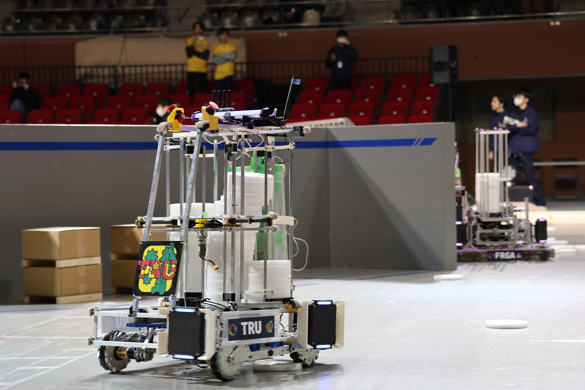
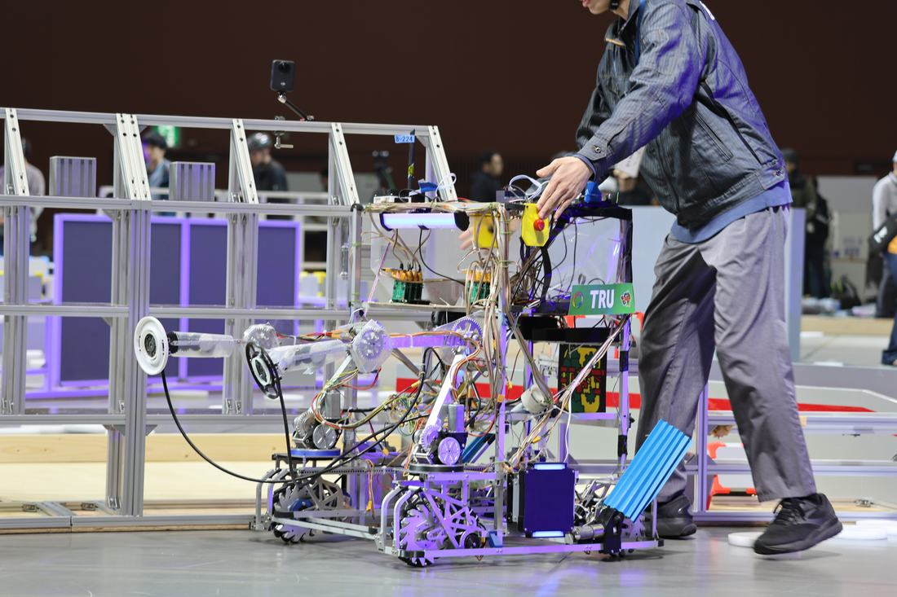
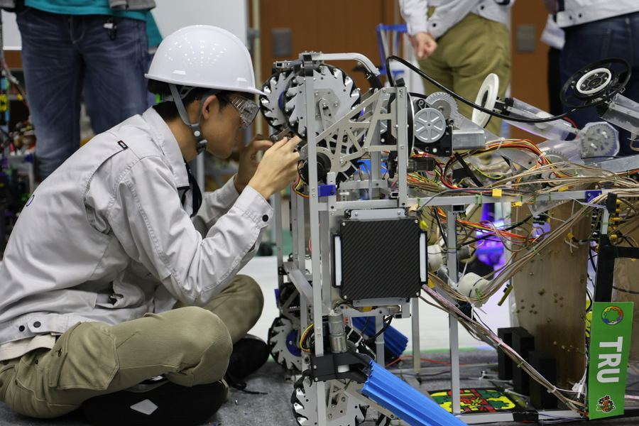
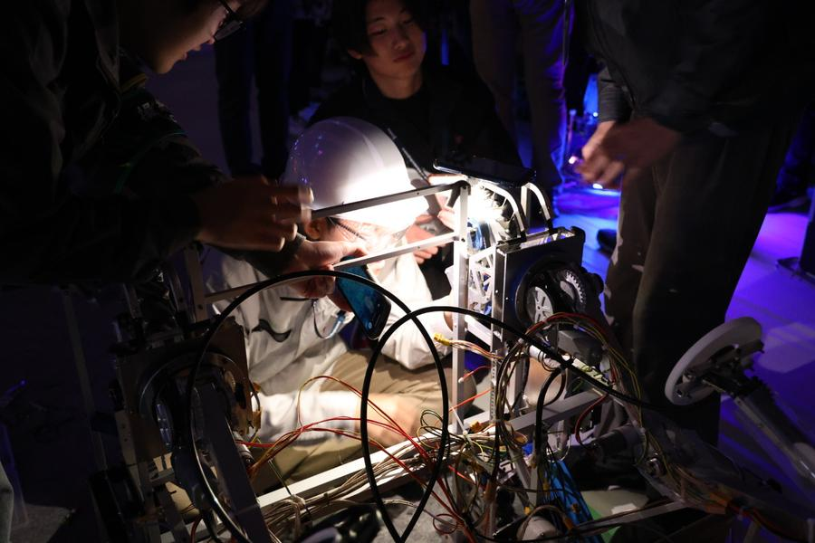

Activities
活動内容

01
CoRE 参戦
The Championship of Robotics Engineers
エンジニア選手権 CoRE 1部リーグに参戦。2025年は初出場で準決勝進出という結果を残し、2026年はさらなる高みを目指す。アタッカーとビルダーの2台体制で、得点力と継戦能力を両立させた戦略的な構成です。

02
キャチロボ（挑戦中）
Challenge in Progress
キャチロボバトルコンテストへの挑戦に向けて準備中です。大会を通じて技術力・チーム連携・広報の力を磨きながら、出場を目指しています。

03
ロボット開発
Multi-disciplinary Engineering
機械設計・制御・回路・通信と多様な技術領域にわたる開発を、遠隔でもリアルでも連携しながら進める。メンバーは東北6県を中心に全国に分散しており、オンラインツールを活用した遠隔開発体制を整備しています。設計から試作・テストまで、一貫したものづくりのサイクルを実践します。